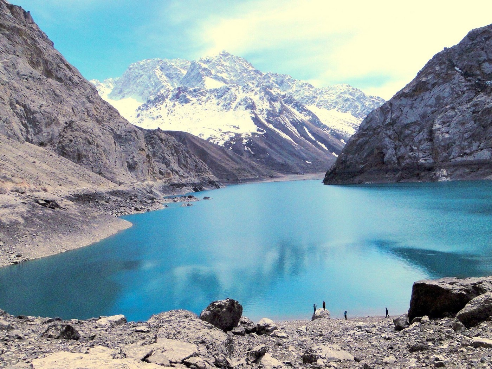

Координаты старта
Съезд в долину начинается от города Пенджикент. Оттуда узкая горная дорога идет вдоль реки Шинг на юг, прямо в ущелье.
Карта и геоданные
Чтобы лучше спланировать поездку, важно понимать, как озера расположены в ущелье, где заканчивается асфальт и где находятся лучшие фото-споты.

Haft Kul (Семь озер) находятся в западной части горной системы Памиро-Алай, в районе Фанских гор Таджикистана, недалеко от границы с Узбекистаном.
Съезд в долину начинается от города Пенджикент. Оттуда узкая горная дорога идет вдоль реки Шинг на юг, прямо в ущелье.
Озера расположены одно за другим, соединены рекой и водопадами. Вы всегда едете только вверх по одному ущелью и возвращаетесь по этой же дороге обратно вниз.
Что нужно знать о дорожном покрытии между озерами.
До Нежигона, Сои и Хушёра дорога относительно ровная, но уже тут начинается грунтовый участок после съезда с основной трассы. Это первые 10-15 км по долине.
Нежигон (1 озеро)От Нофина (4 озеро) и Хурдака (5 озеро) до Маргузора (6 озеро) дорога сужается. А вот подъем от Маргузора к Хазорчашме (7 озеро) — это резкий серпантин по камням, который под силу только джипу (или пешком 1.5 - 2 часа).
Хазорчашма (7 озеро)Где останавливаться во время тура.